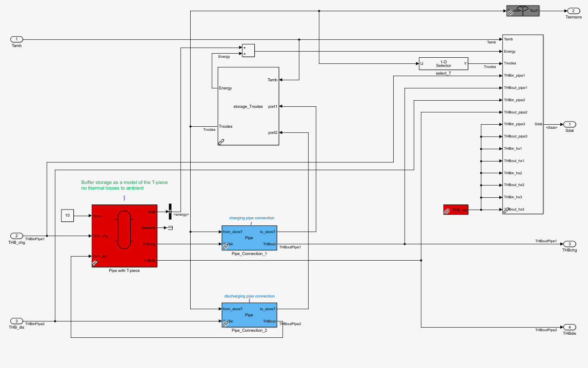
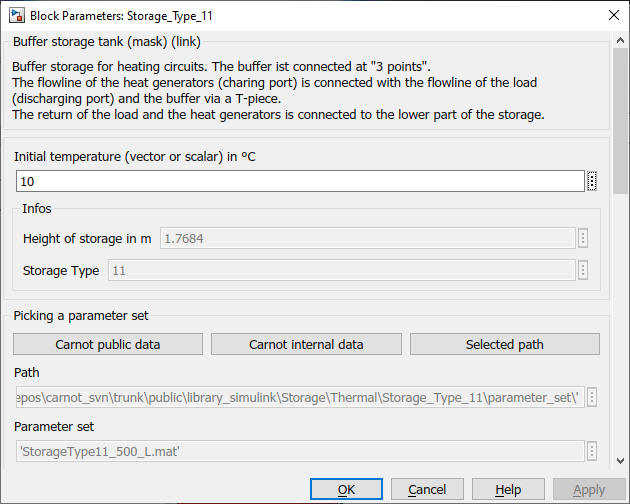

Storage_Type_11
Path: CARNOT/Storage/Thermal
Purpose:
Multiport model for buffer storage with "3-point" direct connection.
Description:
The model uses 2 buffer storage tanks (
Storage_Type_1) to model a buffer storage with a "3-point" connection.
3 point means that the return flow is passing through the buffer tank via a
Pipe port and the flowline is
connected directly to the load. A T-piece in the flowline connects the buffer
tank.
The T-piece is modeled by a small buffer tank of
Storage_Type_1 with one single node to model the complete mixing of the
flow in the T-piece. The T-piece "storage" has no thermal losses. Only the
volume of the T-piece and its connecting pipes has to be given.
The main storage is modeled by a
Storage_Type_1 with all its parameters.
Figure: Hydraulic scheme of a 3-point connected buffer storage tank.

Figure: Model implementation in Carnot Storage_Type_11
Input:
| Tamb | : | ambient temperature in °C (for thermal losses) |
| THB_chg | : | Thermo-Hydraulic Bus of the incomming charging port |
| THB_dis | : | Thermo-Hydraulic Bus of the incomming discharging port |
Output:
| Sdat | : | Storage data bus |
| Tsensors | : | value of temperature sensors in °C |
| THBchg | : | Thermo-Hydraulic Bus of the outgoing charging port |
| THBdis | : | Thermo-Hydraulic Bus of the outgoing discharging port |
Parameters and Dialog Box:

You may directly choose predefined parameter sets.
For details see chapter
2.2.1 Choosing parameter sets for configurated models
Examples:
Open the example explorer from the Matlab command window
ExampleBrowser
or load the examples via the CARNOT library.
Characteristics:
| Direct Feedthrough | : | Yes |
| Sample Time | : | Inherited from driving block |
| Vectorized | : | No |